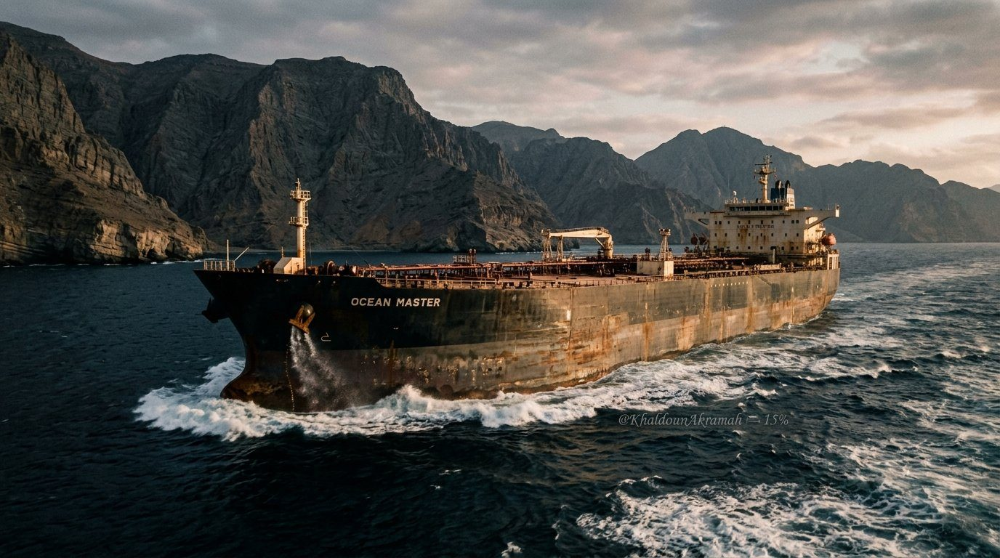

تحقيق جيوسياسي استراتيجيسبتمبر 2026 · دراسة استراتيجية
شريان الاختناق: إغلاق مضيق هرمز ومآلات التجارة العالمية
دراسة ميدانية وتحليلية عميقة لتبعات إغلاق أضيق ممر للطاقة في العالم: تدفق 20.5 مليون برميل يومياً، حساب مسارات رأس الرجاء الصالح، قفزات التأمين البحري، وسيناريوهات الصدمة التضخمية الكبرى للأسواق العالمية.